- Armatex
- Katalog Besco
Katalog złączek Besco 2026
Zbuduj listę indeksów do wyceny. Wpisz numer artykułu Besco, średnicę albo nazwę. Dodaj indeksy, które chcesz prowadzić, podaj ilości i wyślij listę. Ofertę przygotujemy w jeden dzień roboczy.
- Indeksy
- 1 936
- Linie
- 9
- Pakowanie
- worek / karton
Przykłady: GP5001-22 trójnik 28 zawór kulowy 22 × 1/2
- Katalog doczyta się automatycznie. Wpisz numer albo wybierz linię.
Wszystkie grupy produktów Besco
161 grup · 1 936 indeksówKażda grupa ma własną stronę z tabelą rozmiarów, numerami artykułów, opakowaniami zbiorczymi i parametrami linii.
Miedź press, profil V · woda28 grup · 257 indeksów
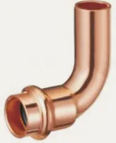
Łuk 90° wzGP5001 · 8 rozm.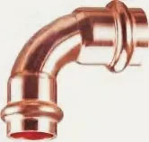
Łuk 90° wwGP5002 · 8 rozm. Łuk 45° wzGP5040 · 8 rozm.
Łuk 45° wzGP5040 · 8 rozm. Łuk 45° wwGP5041 · 8 rozm.
Łuk 45° wwGP5041 · 8 rozm. MufaGP5270 · 8 rozm.
MufaGP5270 · 8 rozm. Mufa przesuwnaGP5270S · 8 rozm.
Mufa przesuwnaGP5270S · 8 rozm.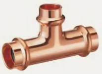
Trójnik równoprzelotowyGP5130 · 8 rozm. Trójnik redukcyjnyGP5130 · 41 rozm.
Trójnik redukcyjnyGP5130 · 41 rozm.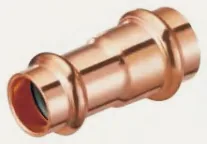
Mufa redukcyjna wwGP5240 · 15 rozm.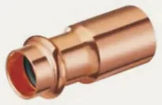
Redukcja wzGP5243 · 19 rozm. ZaślepkaGP5301 · 8 rozm.
ZaślepkaGP5301 · 8 rozm. Mijanka wwGP5085 · 4 rozm.
Mijanka wwGP5085 · 4 rozm.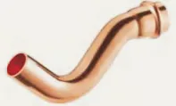
Mijanka wzGP5086 · 4 rozm. Kolano 90° z GWGP4090 · 11 rozm.
Kolano 90° z GWGP4090 · 11 rozm. Kolano 90° z GZGP4092 · 10 rozm.
Kolano 90° z GZGP4092 · 10 rozm. Trójnik z GWGP4130 · 9 rozm.
Trójnik z GWGP4130 · 9 rozm.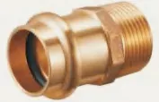
Złączka z GZGP4243 · 14 rozm.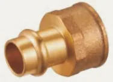
Złączka z GWGP4270 · 15 rozm. Złączka z GZGP4280 · 6 rozm.
Złączka z GZGP4280 · 6 rozm. Złączka z GWGP4281 · 7 rozm.
Złączka z GWGP4281 · 7 rozm. Śrubunek z GZ (uszczelnienie płaskie)GP4331 · 8 rozm.
Śrubunek z GZ (uszczelnienie płaskie)GP4331 · 8 rozm.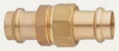
Śrubunek press × press (uszczelnienie płaskie)GP4330 · 5 rozm.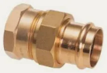
Śrubunek z GZ (uszczelnienie płaskie)GP4330G · 8 rozm.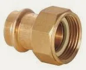
Półśrubunek z GWGP4355 · 7 rozm. Kolano ścienne z GWGP4471 · 3 rozm.
Kolano ścienne z GWGP4471 · 3 rozm.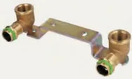
Zestaw montażowy wygięty z GWGP4976 · 1 rozm.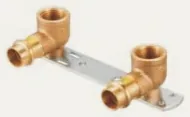
Zestaw montażowy prosty z GWGP4977 · 2 rozm.Rura miedzianaBT · 4 rozm.Miedź press, profil M · woda28 grup · 294 indeksów
 Łuk 90° ww6002 · 14 rozm.
Łuk 90° ww6002 · 14 rozm. Łuk 90° wz6001 · 11 rozm.
Łuk 90° wz6001 · 11 rozm. Łuk 45° wz6040 · 11 rozm.
Łuk 45° wz6040 · 11 rozm. Łuk 45° ww6041 · 11 rozm.
Łuk 45° ww6041 · 11 rozm. Trójnik równoprzelotowy6130 · 11 rozm.
Trójnik równoprzelotowy6130 · 11 rozm. Trójnik redukcyjny6130R · 44 rozm.
Trójnik redukcyjny6130R · 44 rozm. Mufa redukcyjna ww6240 · 18 rozm.
Mufa redukcyjna ww6240 · 18 rozm. Redukcja wz6243 · 28 rozm.
Redukcja wz6243 · 28 rozm. Mufa6270 · 11 rozm.
Mufa6270 · 11 rozm. Mufa przesuwna6271 · 8 rozm.
Mufa przesuwna6271 · 8 rozm. Zaślepka6301 · 10 rozm.
Zaślepka6301 · 10 rozm. Półśrubunek kątowy 90°C6002G · 1 rozm.
Półśrubunek kątowy 90°C6002G · 1 rozm. Półśrubunek z GWC6359G · 1 rozm.
Półśrubunek z GWC6359G · 1 rozm. Mijanka ww6085 · 4 rozm.
Mijanka ww6085 · 4 rozm. Mijanka wz6086 · 4 rozm.
Mijanka wz6086 · 4 rozm. Kołnierz z końcówką press PN 166510 · 4 rozm.
Kołnierz z końcówką press PN 166510 · 4 rozm. Kolano 90° z GW6090G · 5 rozm.
Kolano 90° z GW6090G · 5 rozm. Kolano 90° z GZ6092G · 5 rozm.
Kolano 90° z GZ6092G · 5 rozm. Kolano ścienne z GW6472G · 2 rozm.
Kolano ścienne z GW6472G · 2 rozm. Złączka z GW6270G · 16 rozm.
Złączka z GW6270G · 16 rozm. Złączka z GZ6243G · 20 rozm.
Złączka z GZ6243G · 20 rozm. Trójnik z GW6130G · 18 rozm.
Trójnik z GW6130G · 18 rozm. Półśrubunek z GW6359G · 6 rozm.
Półśrubunek z GW6359G · 6 rozm. Śrubunek z GZ (uszczelnienie płaskie)6331G · 6 rozm.
Śrubunek z GZ (uszczelnienie płaskie)6331G · 6 rozm. Śrubunek z GW (uszczelnienie płaskie)6330G · 6 rozm.
Śrubunek z GW (uszczelnienie płaskie)6330G · 6 rozm. Śrubunek press × press (uszczelnienie płaskie)6330 · 6 rozm.
Śrubunek press × press (uszczelnienie płaskie)6330 · 6 rozm. Złączka z GW6281 · 7 rozm.
Złączka z GW6281 · 7 rozm. Złączka z GZ6280 · 6 rozm.
Złączka z GZ6280 · 6 rozm.Miedź press, profil V · gaz16 grup · 110 indeksów
 Łuk 90° wzGPG5001 · 5 rozm.
Łuk 90° wzGPG5001 · 5 rozm. Łuk 90° wwGPG5002 · 5 rozm.
Łuk 90° wwGPG5002 · 5 rozm. Łuk 45° wzGPG5040 · 5 rozm.
Łuk 45° wzGPG5040 · 5 rozm. Łuk 45° wwGPG5041 · 5 rozm.
Łuk 45° wwGPG5041 · 5 rozm. Trójnik równoprzelotowyGPG5130 · 5 rozm.
Trójnik równoprzelotowyGPG5130 · 5 rozm. Trójnik redukcyjnyGPG5130 · 12 rozm.
Trójnik redukcyjnyGPG5130 · 12 rozm. Mufa redukcyjna wwGPG5240 · 8 rozm.
Mufa redukcyjna wwGPG5240 · 8 rozm. Redukcja wzGPG5243 · 8 rozm.
Redukcja wzGPG5243 · 8 rozm. MufaGPG5270 · 5 rozm.
MufaGPG5270 · 5 rozm. ZaślepkaGPG5301 · 5 rozm.
ZaślepkaGPG5301 · 5 rozm. Kolano 90° z GWGPG4090 · 7 rozm.
Kolano 90° z GWGPG4090 · 7 rozm. Kolano 90° z GZGPG4092 · 6 rozm.
Kolano 90° z GZGPG4092 · 6 rozm. Trójnik z GWGPG4130 · 7 rozm.
Trójnik z GWGPG4130 · 7 rozm. Kolano ścienne z GWGPG4471 · 3 rozm.
Kolano ścienne z GWGPG4471 · 3 rozm. Złączka z GZGPG4243 · 12 rozm.
Złączka z GZGPG4243 · 12 rozm. Złączka z GWGPG4270 · 12 rozm.
Złączka z GWGPG4270 · 12 rozm.Miedź press, profil M · gaz15 grup · 101 indeksów
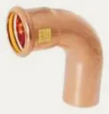
Łuk 90° wz7001 · 5 rozm. Łuk 90° ww7002 · 5 rozm.
Łuk 90° ww7002 · 5 rozm. Łuk 45° wz7040 · 5 rozm.
Łuk 45° wz7040 · 5 rozm.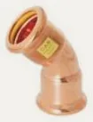
Łuk 45° ww7041 · 5 rozm.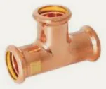
Trójnik równoprzelotowy7130 · 5 rozm. Trójnik redukcyjny7130R · 10 rozm.
Trójnik redukcyjny7130R · 10 rozm. Redukcja wz7243 · 7 rozm.
Redukcja wz7243 · 7 rozm.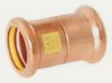
Mufa7270 · 5 rozm. Zaślepka7301 · 5 rozm.
Zaślepka7301 · 5 rozm. Kolano 90° z GW7090 · 5 rozm.
Kolano 90° z GW7090 · 5 rozm. Kolano 90° z GZ7092 · 5 rozm.
Kolano 90° z GZ7092 · 5 rozm. Trójnik z GW7130 · 10 rozm.
Trójnik z GW7130 · 10 rozm. Złączka z GZ7243 · 13 rozm.
Złączka z GZ7243 · 13 rozm. Złączka z GW7270 · 13 rozm.
Złączka z GW7270 · 13 rozm. Kolano ścienne z GW7472 · 3 rozm.
Kolano ścienne z GW7472 · 3 rozm.Stal węglowa press, profil M22 grup · 256 indeksów
 Mufa2270 · 12 rozm.
Mufa2270 · 12 rozm. Złączka z GZ2243G · 18 rozm.
Złączka z GZ2243G · 18 rozm. Złączka z GW2270G · 13 rozm.
Złączka z GW2270G · 13 rozm.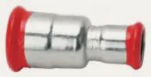
Mufa redukcyjna ww2240 · 8 rozm.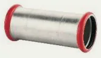
Mufa przesuwna2271 · 11 rozm.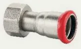
Półśrubunek z GW2359G · 5 rozm.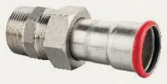
Śrubunek z GZ2331G · 7 rozm. Łuk 90° ww2002 · 12 rozm.
Łuk 90° ww2002 · 12 rozm. Łuk 90° wz2001 · 12 rozm.
Łuk 90° wz2001 · 12 rozm.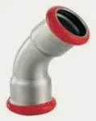
Łuk 45° ww2041 · 12 rozm.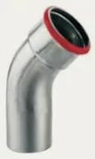
Łuk 45° wz2040 · 12 rozm.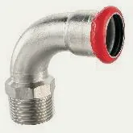
Łuk 90° z GZ2001G · 8 rozm. Łuk 90° z GW2002G · 5 rozm.
Łuk 90° z GW2002G · 5 rozm. Zaślepka2301 · 8 rozm.
Zaślepka2301 · 8 rozm. Redukcja wz2243 · 26 rozm.
Redukcja wz2243 · 26 rozm. Trójnik równoprzelotowy2130 · 12 rozm.
Trójnik równoprzelotowy2130 · 12 rozm. Trójnik redukcyjny2130R · 42 rozm.
Trójnik redukcyjny2130R · 42 rozm.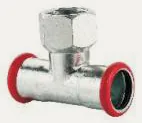
Trójnik z GW2130G · 17 rozm. Kolano 90° z GZ2090G · 5 rozm.
Kolano 90° z GZ2090G · 5 rozm. Złączka z GZ2280 · 3 rozm.
Złączka z GZ2280 · 3 rozm.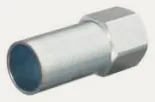
Złączka z GW2281 · 4 rozm. Kołnierz z końcówką press PN 162510 · 4 rozm.
Kołnierz z końcówką press PN 162510 · 4 rozm.Miedź lutowana EN 125426 grup · 513 indeksów
 Łuk 90° wz5001 · 18 rozm.
Łuk 90° wz5001 · 18 rozm. Łuk 90° ww5002 · 18 rozm.
Łuk 90° ww5002 · 18 rozm.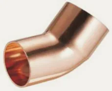
Łuk 45° wz5040 · 17 rozm.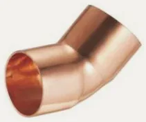
Łuk 45° ww5041 · 18 rozm. Kolano 90° ww5090 · 18 rozm.
Kolano 90° ww5090 · 18 rozm. Kolano 90° wz5092 · 18 rozm.
Kolano 90° wz5092 · 18 rozm. Trójnik równoprzelotowy5130 · 18 rozm.
Trójnik równoprzelotowy5130 · 18 rozm. Trójnik redukcyjny5130 · 113 rozm.
Trójnik redukcyjny5130 · 113 rozm. Mufa redukcyjna ww5240 · 54 rozm.
Mufa redukcyjna ww5240 · 54 rozm.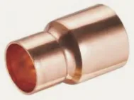
Redukcja wz5243 · 62 rozm. Mufa5270 · 18 rozm.
Mufa5270 · 18 rozm. Zaślepka5301 · 15 rozm.
Zaślepka5301 · 15 rozm. Łuk 180° powrotny5060 · 10 rozm.
Łuk 180° powrotny5060 · 10 rozm. Mijanka ww5085 · 6 rozm.
Mijanka ww5085 · 6 rozm.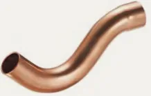
Mijanka wz5086 · 6 rozm.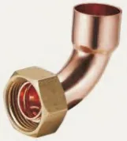
Półśrubunek kątowy 90°5002G · 6 rozm.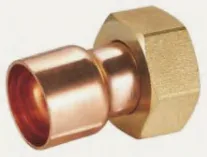
Półśrubunek z GW5359G · 4 rozm.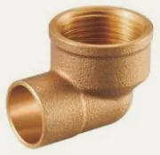
Kolano 90° z GW4090 · 12 rozm.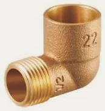
Kolano 90° z GZ4092 · 10 rozm. Śrubunek kątowy 90° z GZ4098 · 4 rozm.
Śrubunek kątowy 90° z GZ4098 · 4 rozm. Kolano ścienne z GW4472 · 8 rozm.
Kolano ścienne z GW4472 · 8 rozm. Trójnik z GW4130 · 10 rozm.
Trójnik z GW4130 · 10 rozm.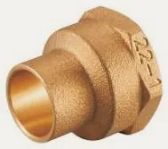
Złączka z GW4270 · 19 rozm.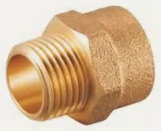
Złączka z GZ4243 · 23 rozm. Śrubunek z GW (uszczelnienie stożkowe)4330G · 4 rozm.
Śrubunek z GW (uszczelnienie stożkowe)4330G · 4 rozm. Śrubunek z GZ4331 · 4 rozm.
Śrubunek z GZ4331 · 4 rozm.Miedź calowa ANSI B16.22 · seria K13 grup · 315 indeksów
 Łuk 90° wzK5001 · 15 rozm.
Łuk 90° wzK5001 · 15 rozm. Łuk 90° wwK5002 · 16 rozm.
Łuk 90° wwK5002 · 16 rozm. Łuk 45° wzK5040 · 13 rozm.
Łuk 45° wzK5040 · 13 rozm. Łuk 45° wwK5041 · 14 rozm.
Łuk 45° wwK5041 · 14 rozm.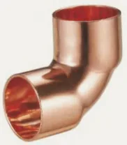
Kolano 90° wwK5090 · 14 rozm.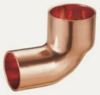
Kolano 90° wzK5092 · 13 rozm. Trójnik równoprzelotowyK5130 · 16 rozm.
Trójnik równoprzelotowyK5130 · 16 rozm. Trójnik redukcyjnyK5130R · 94 rozm.
Trójnik redukcyjnyK5130R · 94 rozm. Mufa redukcyjna wwK5240 · 42 rozm.
Mufa redukcyjna wwK5240 · 42 rozm. Redukcja wzK5243 · 41 rozm.
Redukcja wzK5243 · 41 rozm. MufaK5270 · 16 rozm.
MufaK5270 · 16 rozm.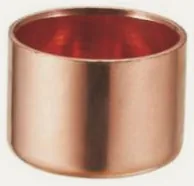
ZaślepkaK5301 · 14 rozm. Syfon PK5096 · 7 rozm.
Syfon PK5096 · 7 rozm.Miedź G-size · chłodnictwo i przemysł9 grup · 65 indeksów
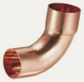
Łuk 90° wzG5001 · 6 rozm.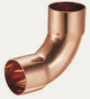
Łuk 90° wwG5002 · 6 rozm.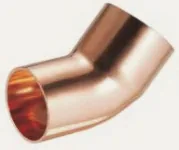
Łuk 45° wzG5040 · 5 rozm. Łuk 45° wwG5041 · 5 rozm.
Łuk 45° wwG5041 · 5 rozm.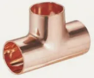
Trójnik równoprzelotowyG5130 · 8 rozm.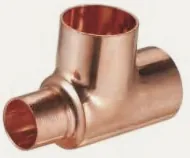
Trójnik redukcyjnyG5130R · 13 rozm. Mufa redukcyjna wwG5240 · 8 rozm.
Mufa redukcyjna wwG5240 · 8 rozm. Redukcja wzG5243 · 9 rozm.
Redukcja wzG5243 · 9 rozm. MufaG5270 · 5 rozm.
MufaG5270 · 5 rozm.
Indeksy Pegler Yorkshire (Tectite, Kuterlite) podaj w formularzu zapytania. Linie i parametry znajdziesz na stronach systemów złączki na wcisk Tectite i złączki skręcane Kuterlite.